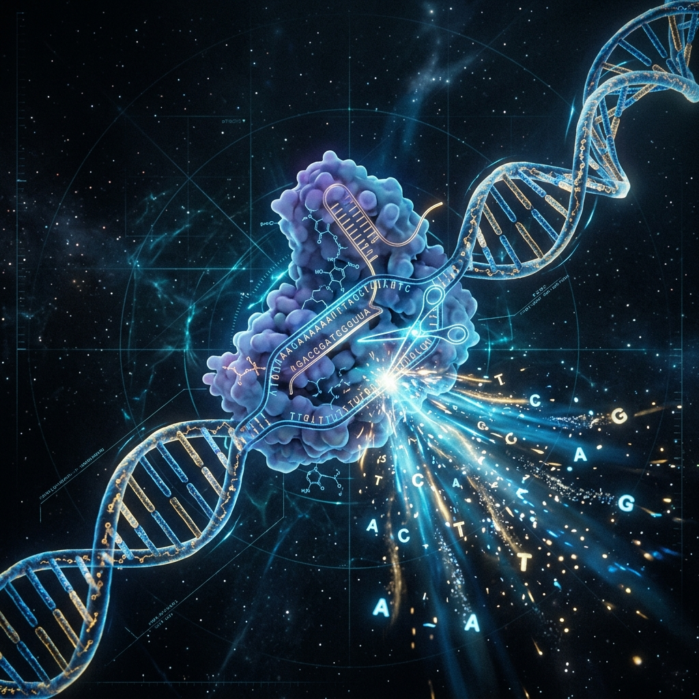
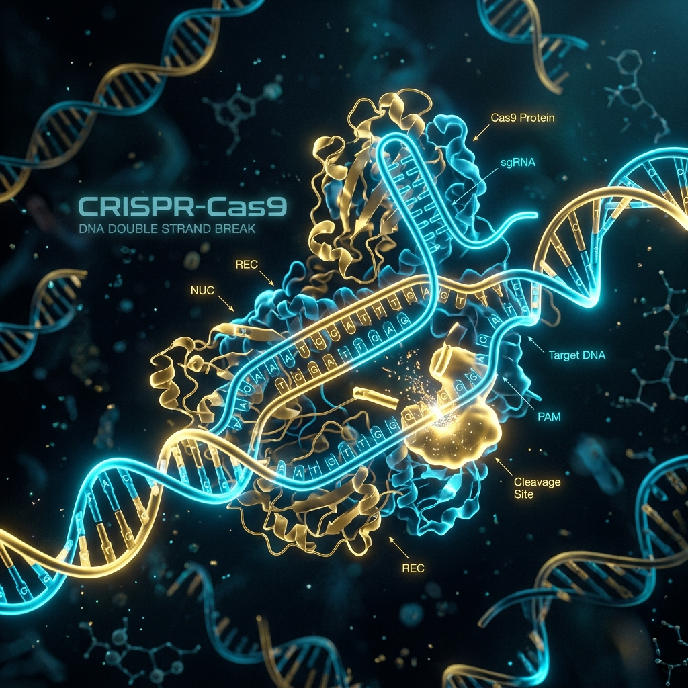
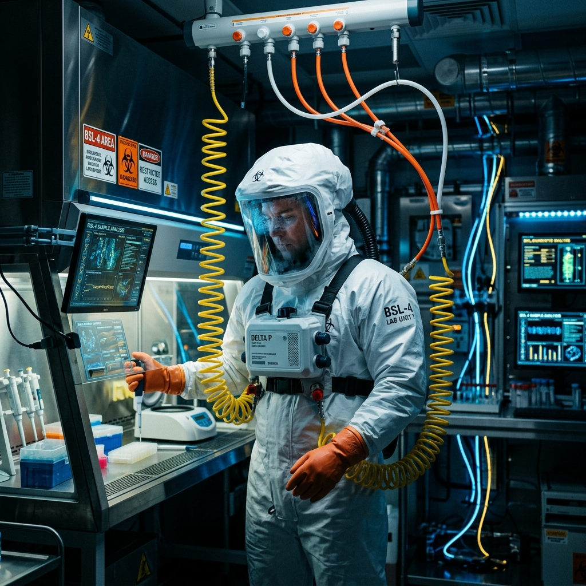
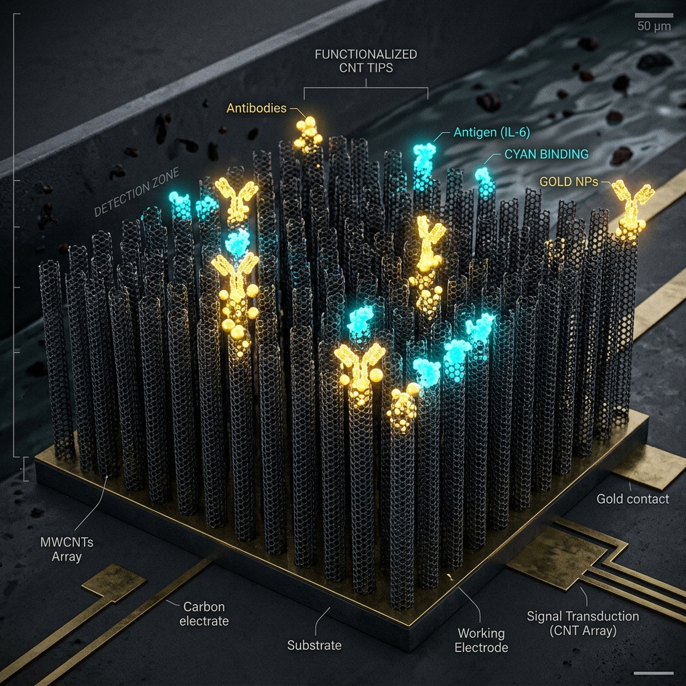
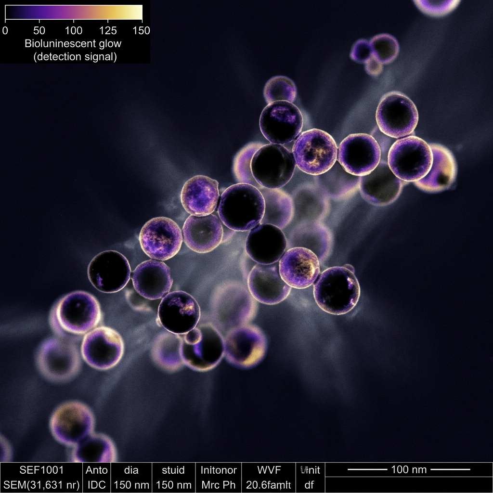
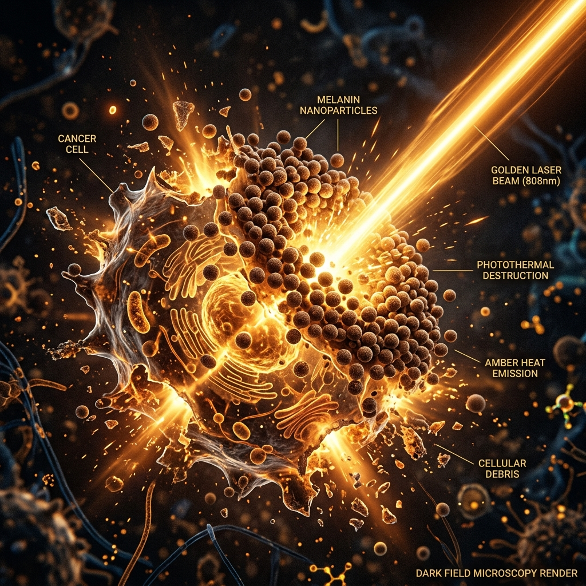
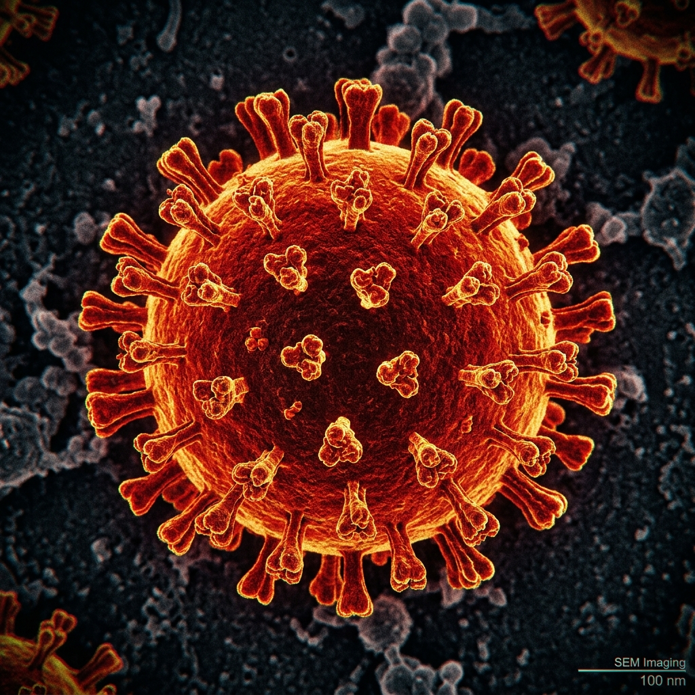

SBC 294 // FUNDAMENTALS OF BIOTECHNOLOGY
BLACK
BIOTECHNOLOGY
Biological security, threat assessment, pathogen surveillance, and biodefense countermeasures.
PROJECT RESEARCH GROUP
- 01 Loyd Ebenezer I72/1073/2024
- 02 Domnic Makori I72/1036/2024
- 03 Fardosa Abdullahi I72/8943/2024
- 04 Innocent Omondi I72/1064/2024
- 05 Wandera Bwire I72/5875/2023
SYSTEM CONFIGURATION
PRESENTATION OUTLINE
This presentation is structured around the five required headings of the SBC 294 group assignment. Select any sector to jump directly to its telemetry.
// SYSTEM DIAGNOSTICS
> SECURE_PROTOCOL: ACTIVE
> TARGET_DILEMMA: DUAL-USE ANALYSIS
> BIOSAFETY_LEVELS: BSL-1 to BSL-4 LOADED
> VECTOR_SURVEILLANCE: CONTINUOUS
MEANING
Definition, scope, and classification within the broader framework.
OBJECTIVES
Primary scientific, security, and strategic goals driving innovation.
CURRENT APPLICATIONS
Real-world biodefense, detection, carbon nanotubes, and melanin.
FUTURE PROSPECTS
CRISPR shields, synthetic biology, and AI pathogen surveillance.
CONCERNS
Socioeconomic, environmental, and ethical bio-risk challenges.

SECTOR 01 // TAXONOMY
MEANING & CLASSIFICATION
Black Biotechnology applies biological knowledge and molecular tools within military, defense, and biosecurity frameworks.
This includes the study and synthesis of biological threat agents, the engineering of advanced biodetection systems, the formulation of biodefense strategies, and medical countermeasures (vaccines, therapeutics) designed to neutralize engineered pathogens.
Beyond military defense, the taxonomy encompasses industrial-scale high-hazard containment bioprocesses:
- Biosafety containment science (BSL-3, BSL-4)
- Extremophile biotechnology (organisms engineered for hazardous, high-radiation, or toxicity-dense environments)
- Carbon-based nanomaterials applied to biological tracking and diagnostics.
Unlike Red (medical) or Green (agricultural) biotechnology, Black Biotechnology operates largely in restricted or classified frameworks.
This secrecy is driven by the dual-use dilemma: the identical sequencing and editing methodologies used to develop protective immunizations can be inverted to engineer highly transmissible, vaccine-resistant pathogens.

SECTOR 02 // GOALS
OPERATIONAL OBJECTIVES
The dual priorities of biosafety and biodefense drive scientific and regulatory objectives.
BIODEFENSE
Formulating vaccines, antidotes, and genetic countermeasures to defend populations against weaponized pathogens like Anthrax, Smallpox, and Ricin.
BIOSURVEILLANCE
Deploying remote, high-sensitivity diagnostic networks to continuously monitor air, water, and food vectors for anomalous pathogen spikes.
THREAT ASSESSMENT
Decoding the molecular structure of toxic agents to forecast mutational capabilities, immune escape potentials, and drug-resistance thresholds.
BIOCONTAINMENT
Iterating physical and negative-pressure barrier designs (BSL-3, BSL-4) to insulate laboratory personnel from fatal contagious agents.
FORENSIC BIOTECH
Synthesizing molecular forensic protocols (deep genomics, proteomics) to identify, trace, and legally audit sources of bioweapons deployment.
RESPONSIBLE INNOVATION
Providing policy, encryption, and sequence-screening architectures to regulate CRISPR, gene drives, and AI drug synthesis globally.
SECTOR 03 // APPLICATIONS A
BIODEFENSE & DETECTION
BioThrax® (Anthrax Vaccine Adsorbed)
Manufactured by Emergent BioSolutions // FDA Approved
The core vaccine protocol utilized by defense agencies to shield military personnel. It generates active immunogenicity against the Anthrax protective antigen (PA), blocking the lethal toxin assembly from penetrating human cell walls.
JBAIDS (Joint Biological Agent Identification)
PCR Diagnostics // Tactical Field Deployments
A portable thermocycler capable of performing automated, real-time polymerase chain reactions (PCR) in field conditions. Detects up to 30 hazardous pathogen strains (including Plague and Tularemia) in under 30 minutes.
BSL-4 Maximum Containment Laboratories
USAMRIID & CDC Sites // Sealed Positive-Pressure Environment
Air-locked, high-vacuum containment facilities built to examine Class A biothreats (Ebola, Marburg, Lassa). Personnel operate in fully isolated positive-pressure suits supplied with direct breathing air lines.
> JBAIDS_OS v4.81 Initialized...
> Ready for environmental sample analysis.
> Click "INJECT SAMPLE" to initiate PCR scan.



SECTOR 03 // APPLICATIONS B
INDUSTRIAL & NANO BIOTECH
• CARBON NANOTUBES (CNTs)
Hollow carbon cylinders exhibiting massive tensile strength and electrical conductance. Applied in diagnostics as molecular biosensor targets, electronic scaffold matrices, and vectors to carry targeted oncology compounds into tumor cells.
• MELANIN-BASED BIOSENSORS
Using the chemical properties of natural biological melanin. The pigment exhibits powerful redox active potentials and chelates (binds) toxic heavy metal ions (Lead, Copper, Iron) with extreme accuracy, yielding self-assembling, eco-friendly sensor matrices.
• RECOMBINANT MELANIN PRODUCTION
Microbial platforms (E. coli, yeast) are engineered with tyrosinase genes to synthesize biological melanin on an industrial scale without oil derivatives. Deployed as UV shielding coatings, biocompatible medical bandages, and aerospace radiation protection shields.
SECTOR 04 // HORIZON
FUTURE PROSPECTS
The collision of synthetic biology, machine learning, and gene editing shapes the next decade of defense.
Engineering human immune systems with Cas12/Cas13 networks to dynamically recognize and slice threat pathogen sequences prior to systemic infection.
Designing custom, living micro-organisms that reside on wearable suits or water supplies to detect, digest, and neutralize bioweapons on contact.
Using synthetic melanin nanoparticles designed to home in on malignant cancers, which then convert near-infrared lasers into tumor-destroying heat.
Integrating global genomic stream sensors with transformer models to isolate and predict viral mutation trajectories weeks before outbreaks occur.

// Active simulation mapping targeted Cas9/Cas12 endonuclease efficiency against weaponized synthetic constructs.

SECTOR 05 // RISK ANALYSIS
SOCIOECONOMIC, ENVIRONMENTAL & ETHICAL CONCERNS
The immense dual-use capacity of Black Biotech raises severe, globally integrated risks.
ACCESS GAP & INSIDER THREATS
- Global Asymmetry: BSL-4 biosafety containment labs cost hundreds of millions to build and maintain, concentrating diagnostic and biodefense capability exclusively in wealthy nations.
- Dual-Use Exploitation: Powerful commercial incentives push private labs to develop proprietary genetic shields, risking monopolization of public safety counters.
- Insider Threat Risks: Highly trained personnel inside high-containment military networks possess the exact access and skills necessary to steal or leak hazardous genetic scripts.
CONTAINMENT FAILURE & WASTES
- Accidental Breaches: Laboratory release of high-contagion synthetic constructs from BSL labs represents a permanent threat to wildlife and human ecosystems.
- Nanotech Persistence: The production of carbon nanotubes and fullerenes generates persistent toxic waste with poorly mapped long-term soil and water cell toxicity effects.
- Ecological Displacement: Synthetic "sensor" microbes designed for environmental bioremediation could outcompete wild microbial populations, breaking food chains.
WEAPONIZATION & COMPLIANCE
- Convention Limitations: The 1972 Biological Weapons Convention bans toxic reserves but lacks formal, teeth-bearing inspection or enforcement protocols.
- Low Entry Barriers: CRISPR, print-on-demand DNA, and AI open-source models dramatically lower the threshold for rogue agents or non-state terror groups to synthesize pathogens.
- The Dual-Use Dilemma: A researcher seeking to construct a vaccine against a theoretical virus must synthesize that virus first, establishing a permanent ethical paradox.
PRESENTATION WRAP-UP
DETERMINISTIC
MITIGATION
"The baseline requirement for operational continuity is absolute control over biological data, engineered genetic sequences, and the physical environments in which they are synthesized."
DEFINE
Military biodefence, biosurveillance, hazardous bioprocesses and carbon nanomaterials.
PROTECT
Vaccines, detection systems, containment and forensic tracing of threats.
APPLY
BioThrax, JBAIDS, BSL-4, CNT biosensors, and melanin platforms — active now.
INNOVATE
CRISPR shields, synbiotic suits, melanin photothermal therapy, AI surveillance.
GOVERN
Strong oversight, equitable access and ethical frameworks prevent misuse.
> SYSTEM NAVIGATION SCHEMATIC
| Left Arrow / PageUp / WheelUp | Previous Slide |
| Right Arrow / PageDown / WheelDown / Space | Next Slide |
| Key [ 1 - 9 ] | Jump to Slide 1 - 9 |
| Key [ N ] | Toggle Speaker Notes Script |
| Key [ H ] | Toggle This Help Menu |
| Escape | Close Open Windows |